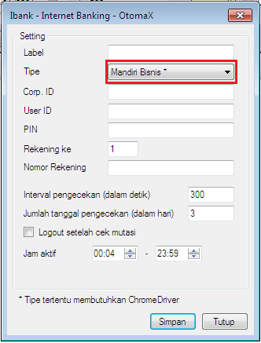

Mandiri Bisnis
Di v4.0.0 modul Internet Banking OtomaX terdapat tambahan modul baru bernama Mandiri Bisnis, berguna untuk mengecek otomatis transaksi di Mandiri Internet Bisnis, sebuah layanan dari Bank Mandiri khusus perusahaan. Dengan demikian, kini fitur Tiket Deposit OtomaX mendukung Bank BCA, BNI, BRI, Mandiri (Internet), Mandiri Online dan Mandiri Bisnis.

Sama seperti modul Mandiri Online, modul ini bekerja ditopang oleh Google Chrome, Chrome Driver, dan Selenium Web Driver. Pastikan software - software tersebut telah diinstall di komputer server Anda, klik disini untuk menginstal.
Modul ini tidak tersedia di semua edisi OtomaX, hanya tersedia di edisi tertentu, untuk info lengkapnya klik disini. Apabila versi OtomaX Anda belum v4.0.0, klik disini untuk update; apabila masa berlaku OtomaX Anda kurang dari 1 bulan klik disini untuk membayar iuran; dan apabila ingin membangun server pulsa khusus segmen tertentu klik disini.
Penggunaannya cukup mudah, pilih modul Internet Banking -> klik kanan -> klik Tambah Internet Banking... -> beri nama modul dan seterusnya, untuk lebih jelasnya silahkan klik disini.